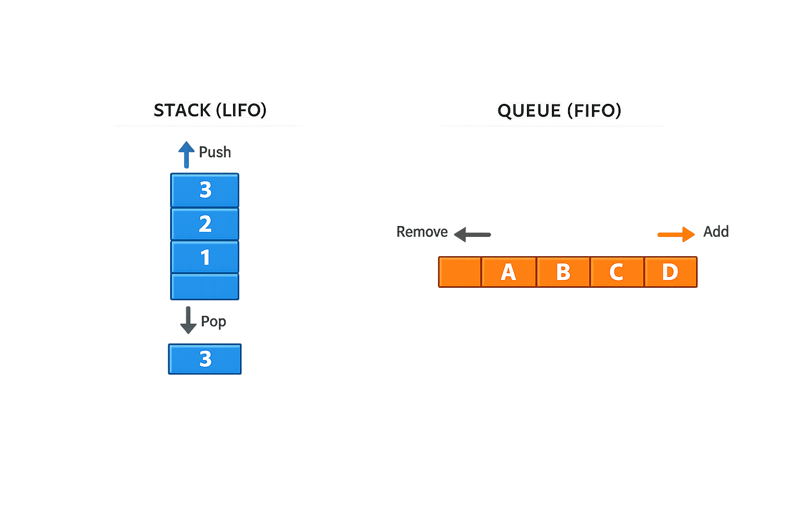

Python Stacks & Queues Explained (Python Docs 5.1.1 / 5.1.2) | append(), pop(), deque
Lists aren't just general-purpose containers — with just two methods, append() and pop(), they turn into a fully working stack. This page explains the official Python docs §5.1.1 and §5.1.2 in simple language: how to use a list as a stack, why lists are a poor fit for queues, and how collections.deque solves that problem.
By the end of this guide you'll know when a list makes a great stack, why pop(0) on a list is slow, and how to build a proper FIFO queue with deque.
Stacks vs Queues — What's the Difference?
Both stacks and queues are ways of ordering how items go in and come out of a collection. The difference is entirely about which end you remove items from:
- Stack (LIFO) — Last-In, First-Out. The last item you added is the first one you take out. Think of a stack of plates.
- Queue (FIFO) — First-In, First-Out. The first item you added is the first one you take out. Think of a line at a ticket counter.
Python lists can act as both — but only one of these is actually efficient with a plain list, as you'll see below.

5.1.1. Using Lists as Stacks
The list methods make it very easy to use a list as a stack, where the last element added is the first element retrieved ("last-in, first-out"). To add an item to the top of the stack, use append(). To retrieve an item from the top of the stack, use pop() without an explicit index.
Because both operations happen at the end of the list, they're fast — no shifting of other elements is needed. That's exactly what makes lists a natural fit for stacks.
stack = [3, 4, 5]
stack.append(6)
stack.append(7)
stack
# [3, 4, 5, 6, 7]
stack.pop()
# 7
stack
# [3, 4, 5, 6]
stack.pop()
# 6
stack.pop()
# 5
stack
# [3, 4]Kiddo extra — peeking at the top without popping
stack = [10, 20, 30]
# "Peek" at the top item without removing it
top_item = stack[-1]
print(top_item) # 30
print(stack) # [10, 20, 30] ← unchanged, because we didn't pop()
# Check if the stack is empty before popping
if stack:
print(stack.pop()) # 30
else:
print("Stack is empty")5.1.2. Using Lists as Queues
It is also possible to use a list as a queue, where the first element added is the first element retrieved ("first-in, first-out"); however, lists are not efficient for this purpose. While appends and pops from the end of a list are fast, doing inserts or pops from the beginning of a list is slow — because all of the other elements have to be shifted by one.
This is the key catch: a list stores its elements in one contiguous block of memory. Removing from the front means every remaining element has to shift left by one position to fill the gap. For a small list this is unnoticeable — for a large one, it adds up fast.
collections.deque, which was designed to have fast appends and pops from both ends.collections.deque — The Right Tool for Queues
A deque (pronounced "deck", short for double-ended queue) behaves like a list but is built specifically so that adding or removing from either end is fast. It supports append() / pop() on the right, and appendleft() / popleft() on the left — all in constant time.
from collections import deque
queue = deque(["Eric", "John", "Michael"])
queue.append("Terry") # Terry arrives
queue.append("Graham") # Graham arrives
queue.popleft() # The first to arrive now leaves
# 'Eric'
queue.popleft() # The second to arrive now leaves
# 'John'
queue # Remaining queue in order of arrival
# deque(['Michael', 'Terry', 'Graham'])Kiddo extra — deque as a stack too
from collections import deque
# deque works great as a stack too — same append()/pop() API as a list
stack = deque([1, 2, 3])
stack.append(4)
print(stack.pop()) # 4
# but it also gives you fast operations on the left side, which a list doesn't
d = deque([1, 2, 3])
d.appendleft(0)
print(d) # deque([0, 1, 2, 3])
print(d.popleft()) # 0
The choice between a list and a deque comes down to which end of the collection you're working with most often.
| Operation | list | deque | Why? |
|---|---|---|---|
append(x) (right end) |
O(1) | O(1) | Both add to the end without shifting anything. |
pop() (right end) |
O(1) | O(1) | Removing the last item is constant time for both. |
Insert/remove at front — insert(0, x) / pop(0) |
O(n) | O(1) (appendleft / popleft) |
A list must shift every remaining element by one; a deque is built for both ends. |
Random access by index — a[i] |
O(1) | O(n) | Lists are contiguous in memory; a deque has to walk from an end to reach index i. |
Interview Tip: Interviewers often ask why you'd use deque instead of a list for a queue. The answer is exactly this trade-off: a list is optimized for the end and for indexing, while a deque is optimized for both ends at the cost of slower random access.
Real-World Uses of Stacks and Queues
Stacks and queues aren't just interview topics—they're used in many real applications. Once you recognize the pattern, you'll start seeing them everywhere.
Stack (LIFO) Examples
- Undo / Redo in text editors like VS Code or Microsoft Word.
- Browser Back button — the last page visited is the first one you return to.
- Function calls in Python use a call stack internally.
- Expression evaluation and parsing in compilers.
Queue (FIFO) Examples
- Printer queue — documents are printed in the order they arrive.
- Customer support tickets — older requests are handled first.
- Task scheduling in operating systems.
- Breadth-First Search (BFS) in graphs uses a queue.
Easy way to remember:
Stack = Plates (last plate placed on top is the first one removed).
Queue = People in a line (first person in line gets served first).
Common Stack & Queue Mistakes
my_list.pop(0) works, but it's O(n) because every remaining item shifts left. For real queue workloads, use collections.deque and popleft() instead.
Calling .pop() or .popleft() on an empty collection raises IndexError. Always check if stack: or if queue: first, or wrap it in a try/except.
Both stacks and queues can use append() to add — the difference is entirely in which end you remove from: pop() for a stack, popleft() for a queue.
deque lives in the collections module — you need from collections import deque before using it. It isn't a built-in like list.
deque is optimized for both ends, not the middle. If your code does a lot of d[i] lookups, a list (or a different structure entirely) may be a better fit.
Stack & Queue Interview Questions and Answers
append() and pop(). A queue is FIFO (First-In, First-Out) — the oldest item comes out first, typically using append() and popleft() on a deque.pop(0) forces every remaining element to shift left by one position, making it an O(n) operation. A deque avoids this by supporting fast operations at both ends.deque (double-ended queue) is a list-like container optimized for fast O(1) appends and pops from both ends. Use it whenever you need queue behavior, a sliding window, or any structure where items are frequently added/removed from the front.append() and pop() (without an index) operate on the end of the list, no shifting is required, so both run in O(1). This makes plain lists a perfectly good choice for stacks.deque from collections, then use append(x) to add items to the back and popleft() to remove items from the front: from collections import deque; q = deque(); q.append(x); q.popleft().O(1). Unlike a list, a deque is implemented internally so that operations on either end don't require shifting the remaining elements.Stack & Queue FAQ
append() and pop() both work on the end in O(1) time. For queue usage, avoid pop(0) and use collections.deque instead.append() and pop() work right away with no imports. You only need an import — from collections import deque — if you want an efficient queue.O(n) on a deque versus O(1) on a list.Functions (4.8) · While Loop · For Loop · If Statements · Lists · Dictionaries (5.5) · Tuples (5.3) · Sets (5.4) · List Comprehensions · Looping Techniques Default Arguments · Nested List Comprehensions · Keyword Arguments ·